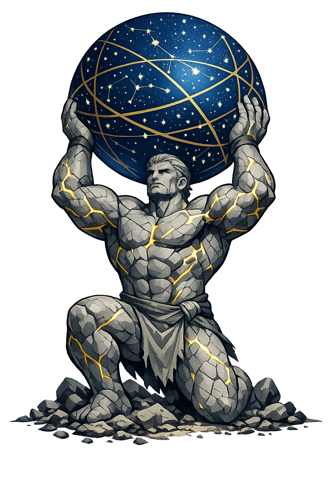

The Weight of Heaven
Titan of Endurance · Bearer of the Heavens · Pillar of the West

Why átlas.com preserves the ancient name where ASCII cannot
Ἄτλας
The name in its original Greek form. The rough breathing on the alpha, the acute that rises like a mountain peak. A name that speaks of weight — of something so heavy that only a Titan could bear it. The very sound is a strain.
ATLAS
Reduced to a book of maps. A missile system. A spine. A Titan who holds the heavens on his shoulders — reduced to five uppercase letters in a database field. The weight is gone. The endurance is gone. Only the label remains.
átlas
Tier-2 preserves the acute on the first á — the pitch accent that rises like a column of stone. Because the alpha is short, the acute is the only mark. No macron is needed. The PUNYCODEX owns the authentic form. The ASCII is merely a shadow.
átlas.com → xn--tlas-4na.com
The single non-ASCII character — á (U+00E1) — encodes to a Punycode string. To the DNS, it is a different domain entirely. To humanity, it is the true name of the Titan who holds the sky.
Where átlas stands in the PUNYCODEX elegant tier system
átlas carries the acute on the á but no macron. Under the elegant tier system, a Greek name with only one mark type — in this case, acute-only — is Tier 2.
This is not a deficiency. In Liddell-Scott-Jones, Cambridge, and Oxford editions, single-mark is the standard convention. The stress is preserved even when the length is not. The acute on the á restores the pitch accent that shaped how the titan of endurance was named. Átlas is not a compromise. It is a preservation.
How the Bearer of Heaven was truly spoken
Domains, symbols, and the weight of eternity
átlas is the most patient of all the Titans. He does not fight. He does not flee. He holds. When the Olympians defeated the Titans in the great war, they did not kill Atlas. They gave him a task that would last forever: to stand at the western edge of the world and bear the celestial sphere upon his shoulders. He has been holding it ever since.
Not merely strength — patience. Atlas does not flex or show his power. He simply does not yield. He is the god of those who carry what others cannot. The single parent. The caregiver. The founder who refuses to quit. His strength is not explosive. It is inexhaustible.
He holds the heavens — not the Earth, as later artists depicted. The ouranos itself rests upon his shoulders. All the stars, all the constellations, the turning of the cosmos. He is the pillar between the world and the infinite. Without him, the sky would fall.
His name became the word for collections of maps because his image — holding the sphere of the world — adorned the cover of Mercator's first atlas. He is the patron of those who measure the Earth and map the stars. Every atlas is a shrine to his endurance.
He stands where the world ends and the ocean begins — the Pillars of Heracles were once called the Pillars of Atlas. He is the guardian of the threshold, the boundary-keeper, the one who stands between the known and the infinite. He is the last thing you see before the world falls away.
Stories of strength, consequence, and eternal patience
When Zeus rose against Cronus, Atlas led the Titans in the great war for heaven. He fought with terrible strength, hurling mountains and calling earthquakes. But the Olympians prevailed. The Titans were cast down — into Tartarus, into rivers, into eternal sleep. Atlas alone was given a different punishment. Zeus looked at him and said: "You who would hold up the sky in war will hold it up in peace. Forever." It was not mercy. It was the most terrible sentence of all — to never rest, never yield, never die.
At the western edge of the world, where the ocean falls away into mist, Atlas stands. The celestial sphere rests upon his shoulders — not the Earth, as later poets misunderstood, but the ouranos itself. All the stars, the turning constellations, the very vault of heaven. He does not complain. He does not weep. He simply holds. Some say he has grown into the stone beneath him. Some say the stone has grown into him. After ten thousand years, there is no difference. He is the boundary between the world and the infinite.
Heracles, on his twelfth labor, needed the golden apples of the Hesperides — Atlas's daughters. He found the Titan still holding the sky and offered to take the burden for a moment if Atlas would fetch the apples. Atlas agreed. Heracles took the celestial sphere upon his shoulders and felt, for the first time, the true weight of infinity. Atlas returned with the apples — and offered to deliver them himself, leaving Heracles to hold the sky forever. But Heracles, cunning as he was strong, asked Atlas to hold the sky just for a moment while he adjusted his cloak. Atlas, pitying the mortal, agreed. Heracles walked away with the apples. Atlas still holds the sky. He has been holding it ever since.
Perseus, returning with Medusa's head, passed the western edge where Atlas stood. The Titan, weary and suspicious, refused him shelter. Perseus, in his wrath, turned the Gorgon's face upon him. Atlas's body turned to stone — but the stone grew. It became a mountain range so vast that it splits two continents and touches the sky. The Atlas Mountains still bear his name. He was turned to stone, but the stone became a world. Even in death — if it was death — he could not stop holding up the heavens.
Zeus has thunder. Poseidon has the sea. Áres has war. But átlas has the weight. Without him, the sky would fall. Without endurance, all power crumbles. He is the oldest truth: that strength is not the ability to strike, but the ability to hold when everything demands that you let go.
This is not a directory. This is a resurrection.
Enter the CodexSee how Átlas behaves in the PUNYCODEX Type Tool — with predictive autocomplete, character-by-character breakdown, and scholarly constraint validation.
atlas
→
Átlas